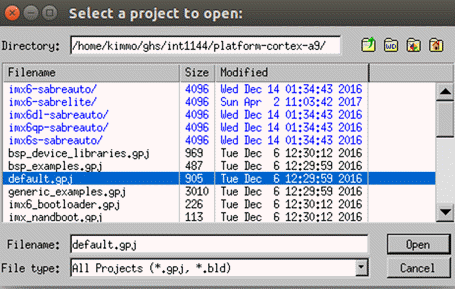

Preparing BSP for i.MX6 Quad Board
With MULTI Launcher, you can prepare the board support package (BSP) for i.MX6 Quad board:
- Start MULTI Launcher.
- Start Project Manager by selecting Components > Open Project Manager.
- In your INTEGRITY installation, select the project file default.gpj under the platform-cortex-a9 folder:

- Select Open.
In the MULTI Project Manager view, you see a tree structure of the opened project.
Clean default.gpj and build the projects:
- Select Build > Clean default.gpj.
- Select the files system_libs.gpj, bsp_libs.gpj, and kernel.gpj one by one, and select Build > Build Project <file name> for each selected file.
Preparation for the board support package is now done.